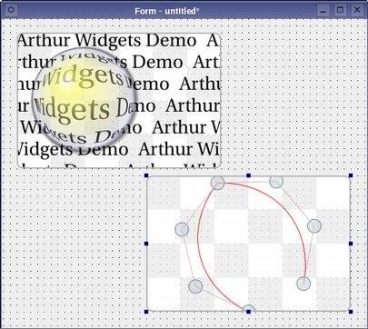

Arthur Plugin
Using the Qt painting system with Qt Designer custom widget plugins.

The specialized widgets used in the other examples of the Arthur painting system are provided as custom widgets to be used with Qt Designer. Since each of the widgets provides a set of signals and slots, the effects they show can be controlled by connecting them up to standard input widgets.
Files: